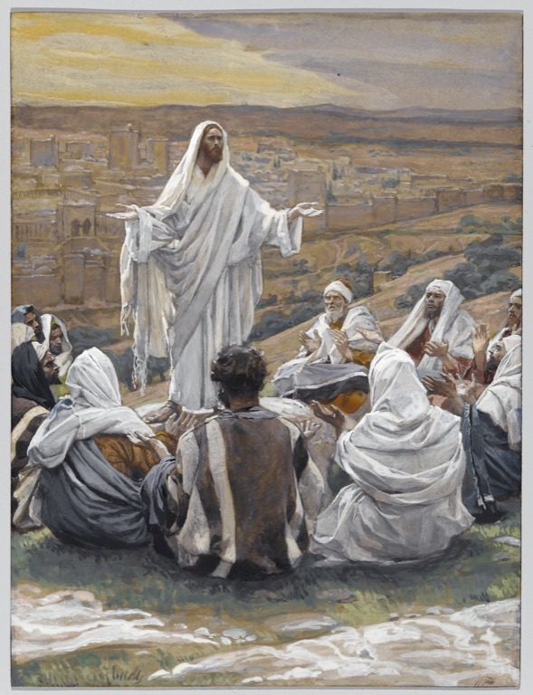

Luke 11 — The Mister Translation

⚠ Read this painting against the text, not just alongside it. Tissot stages the teaching as public preaching on an open hillside above a whole city — a crowd of disciples arranged like an audience — which is closer to Matthew’s Sermon on the Mount setting for the identical prayer (6:9–13, already on these pages) than to Luke’s own, far barer scene: ‘a certain place’, no crowd, no mountain, just one disciple asking on behalf of the rest after watching Jesus pray alone (v1, this chapter’s own note). The painting is real and the prayer is the same seven-verse core in both Gospels — but the grander staging belongs to Matthew’s telling, not Luke’s, and the gap between the two is worth noticing rather than smoothing over.
_-_James_Tissot.jpg){kind=link}
Translator’s Notes — verse by verse
Each note explains this translation’s choice and compares the seven versions on the shelf. Quotations from copyrighted versions (NIV, TLB, NWT) are kept to short phrases for comparison; KJV, Geneva, Douay-Rheims and ASV are public domain.
⭐⭐⭐ Luke’s prayer is the shorter of the New Testament’s two, on purpose, in the text this translation follows. The earlier witnesses (Westcott-Hort, Tregelles and the NA28 all agree here) read simply ‘Father’ (v2), not ‘Our Father, who is in the heavens’; they have no third petition at all — no ‘your will be done, as in heaven, so on earth’ — and at v4 they stop at ‘testing’, with no ‘but rescue us from the evil one’. The later Byzantine majority text adds all three phrases, each one lifted verbatim from Matthew 6:9–13 (already on these pages) — a copyist’s ear, hearing this shorter prayer read aloud, supplying what long liturgical habit expected to hear next. KJV, Geneva, RV 1909 and RV60 all print the longer, harmonized text; ASV, NWT, NIV, Douay and NVI all print the shorter one this translation follows — the Vulgate behind the Douay never had the extra words in Luke either, so Rome and the modern critical editors agree here against the King James, exactly as they do at the Lord’s Prayer’s missing doxology in Matthew.
“Let your name be sanctified. Let your kingdom come” (v2) uses the identical two verbs, in the identical two clauses, as Matthew 6:9–10 — the one piece of the prayer the early and the Byzantine texts agree on (a pair of late minuscules, and Gregory of Nyssa, pray for the Holy Spirit in place of the kingdom).
⭐⭐ “Day by day” plus ‘the coming day’s bread’ — Luke doubles the routine where Matthew states it once. Both Gospels ask for ton arton ton epiousion, the mysterious ‘bread for the day ahead’ found nowhere else in Greek literature (see that entry). But Matthew’s verb is a one-time aorist, ‘give us today’ (dos… sēmeron, 6:11); Luke’s is a present imperative with its own added phrase, ‘keep giving us… day by day’ (didou… to kathʼ hēmeran) — a request for one day’s ration, repeated one day at a time, rather than a single day named once. The manna rhythm the dictionary entry already reads into the adjective is, in Luke’s grammar, spelled out twice over.
⚠ Luke asks forgiveness for “sins”, then forgives “debts” — Matthew keeps one metaphor, Luke runs two. V4’s first verb is hamartias, sins outright, where Matthew’s Lord’s Prayer keeps the commercial image throughout, ‘forgive us our debts, as we forgive our debtors’ (already flagged forward at Matthew 6:9’s own note, which named this exact divergence before either Gospel’s Luke text was on these pages). Luke’s own second half then switches BACK to the commercial word anyway — ‘we ourselves also forgive everyone who is indebted to us’ (opheilonti) — so within one verse Luke asks God to forgive a sin while describing what HE does as canceling a debt. Aramaic choba covers both senses in one word, which is very likely the seam showing: whichever Gospel is closer to the original wording, Luke’s own text preserves the two images sitting side by side rather than smoothed into one.
⭐⭐⭐ Whose shamelessness — the man knocking, or the man in bed? Anaideia (v8) is the parable’s hinge word, and the Greek pronoun attached to it, autou, ‘his’, most naturally points back to the SAME subject as the surrounding verbs — the sleeping friend inside, who ‘will not get up… yet will get up’. Read that way, it is not the petitioner’s persistence that wins the loaves; it is the housebound friend’s OWN reluctance to be shamed, in a village where a neighbor’s midnight need was everyone’s business, by being seen to refuse. The traditional reading takes it the other way — the ASKER’s shameless persistence — and it has the better claim on how the next three verses actually apply the story (‘ask, and it will be given you’, vv9–10, is about the ASKER’s posture, not the host’s). This translation keeps the English every bit as ambiguous as the Greek — ‘his shamelessness’ — rather than deciding the question for the reader that the pronoun itself does not decide. KJV, ASV, Douay, Geneva and both Reina-Valeras render it ‘importunity’ / ‘importunidad’, siding with the traditional reading; NWT keeps ‘bold persistence’; NIV ducks the pronoun question entirely by recasting the whole scene in direct address to the listener — ‘because of YOUR shameless audacity’ — which resolves the ambiguity by changing who is being spoken to rather than by settling who ‘he’ was.
⚠ A friend twice over, and still no. The reluctant friend is named philos — the same word the petitioner used of him — in Jesus’s own comment on the refusal (v8: ‘because he IS his friend’), which is what makes the initial no so pointed: friendship alone, on this telling, is not what moves him.
This parable exists in no other Gospel; Luke alone tells it, immediately after his own shorter Lord’s Prayer, as the prayer’s own first illustration.
⭐⭐⭐ Egg and scorpion, not bread and stone — Luke’s two examples are not Matthew’s two examples. Matthew 7:9–10 (already on these pages) gives TWO pairs — bread/stone, then fish/serpent. The earlier witnesses this translation follows for Luke (Westcott-Hort, NA28) give only ONE pair at v11, fish/serpent, then a SECOND pair Matthew never uses at all: egg and scorpion (v12) — a scorpion at rest can curl into an egg-like shape, which may be the visual joke underneath the substitution. The Byzantine majority text (Tregelles agrees with it here) inserts Matthew’s bread-and-stone clause into Luke as well, harmonizing the two Gospels into identical lists; KJV, ASV, Geneva, Douay and both Reina-Valeras all print the inserted bread/stone line, while NWT, NIV and NVI keep the shorter, fish-only opening this translation follows.
⭐⭐ “The Holy Spirit”, not “good things” — the two Gospels do not end the saying the same way either. Matthew’s version closes, ‘how much more will your Father… give GOOD THINGS to those who ask him’ (agatha, 7:11); Luke’s closes on a specific gift instead, ‘give the HOLY SPIRIT to those who ask him’ (v13) — consistent with this Gospel’s own habit of naming the Spirit by name where a parallel text speaks more generally (compare Luke 10:21’s own note on Jesus rejoicing ‘in the Holy Spirit’, a detail Matthew’s parallel saying omits entirely).
⭐⭐⭐ Every other Gospel has already told this story on these pages; Luke tells it last, and shortest. Matthew narrates the Beelzeboul charge muttered without a name (9:34), names it as a warning to the Twelve (10:25), then gives it a full scene (12:22–30, already on these pages); Mark gives the scene once, briefly (3:22–27, already on these pages). Luke has never mentioned the charge before this verse — no muttering, no warning — and gives it its OWN scene, triggered by its own miracle: a demon that leaves a man UNABLE TO SPEAK (kōphon, v14), rather than Matthew’s blind-and-mute man (12:22) or Mark’s unspecified possession.
Beelzeboul is explained in full at that entry (from 2 Kings 1’s Ba’al Zevuv, already on these pages) — the same name Matthew and Mark both use, and the same one-consonant Hebrew slander behind it.
⚠ “House falls against house” is not grammatically “a house divided against itself falls.” The kingdom clause (v17a) uses diamerizō plus a reflexive, ‘divided AGAINST ITSELF’; the house clause that follows it switches construction — oikos epi oikon piptei, literally ‘house falls UPON house’, with no reflexive and no repeated ‘divided’ at all. Twelve of the thirteen versions on this shelf smooth the second clause to match the first (‘a house divided against a house falleth’, ASV); the lone exception is Douay, translating the Vulgate’s own literal wording, ‘house UPON house shall fall’ — closer to the Greek’s actual construction than any other version on the shelf. This translation keeps the same asymmetry, since the picture is arguably not one house splitting internally but a whole household complex — the extended family compounds common in the period — toppling wing against wing.
Mark has neither the ‘finger of God’ nor the ‘Spirit of God’ clause that follows in the next note — only Matthew and Luke ask the question at all. Mark 3:22–27 (already on these pages) moves directly from ‘how can Satan cast out Satan’ to the divided kingdom and the strong man, with no ‘if I cast out demons by X’ clause in between. That clause is a place where Matthew and Luke agree with each other against Mark’s shorter, blunter version — and then disagree with EACH OTHER about which X (see the next note).
⭐⭐⭐ “The FINGER of God” — Matthew’s version of this identical saying reads “the SPIRIT of God” instead, and this one was promised in advance. Matthew 12:28 (already on these pages): ‘if I cast out demons by the SPIRIT of God’; Luke here (v20): ‘by the FINGER of God’ — the identical argument, the identical conclusion (‘the kingdom of God has come upon you’), a different image for the same divine action. The idiom itself is older than either Gospel: Exodus 8:15 (already on these pages — this chapter’s own Masoretic numbering runs four verses behind the familiar English 8:19) already has Pharaoh’s own magicians confess ‘this is the finger of God’ over a plague they cannot reproduce, and that chapter’s closing note names exactly this verse as where the phrase would resurface — a forward pointer written before this chapter existed, paid off here. Deuteronomy 9:10 (already on these pages) reuses the same idiom for the tablets God himself inscribed at Horeb, as Exodus 31:18 already had (already on these pages). Four uses, one idiom, no instrument and no effort each time — a small, almost casual image for irresistible divine power, next to Matthew’s larger theological vocabulary of Spirit.
⚠ A courtyard, not a house. Where Matthew’s strong-man saying has someone entering ‘the STRONG MAN’S HOUSE’ (oikian, 12:29) and Mark’s matches it exactly (oikian, 3:27), Luke’s strong man guards his aulē (v21) — a fortified COURTYARD or forecourt, the kind attached to a grand residence, not the dwelling itself. The image shifts from breaking into a house to storming a compound’s defended enclosure — a stronger, more military picture of the ‘full armor’ (v22) the stronger attacker strips away.
⚠ Luke never says this story is about “this evil generation” — Matthew does, in so many words. Matthew 12:43–45 (already on these pages) closes the identical parable with an explicit application: ‘SO WILL IT ALSO BE with this evil generation.’ Luke’s version (v26) simply ends at ‘the last state of that man becomes worse than the first’ — no closing sentence tying the parable back to Jesus’s opponents at all. Read where Luke actually places it, straight after the Beelzeboul charge and before the sign-seekers of the next verses, the application is left for the hearer to draw rather than stated for them.
The house is found ‘swept and put in order’ in both Gospels; Matthew’s manuscripts (Westcott-Hort’s reading of Matthew) add a third adjective, ‘EMPTY, swept, and put in order’, that the earlier witnesses to Luke’s own text do not carry here — one more small point where the two tellings, otherwise close to word-for-word, do not quite match.
⭐⭐ “No, rather” — a correcting particle, not an outright rejection. Menoun (v28) does not mean ‘no’; it means something closer to ‘more precisely’ or ‘rather, say this instead’ — Jesus does not deny that his mother is blessed for having borne him (he says nothing at all about whether the woman’s specific claim is true), he REDIRECTS which blessedness matters most: hearing and keeping God’s word, a blessedness open to the crowd she is standing in, not sealed by biology to one woman. This Gospel already made the identical move once, in almost the same words: told that his mother and brothers are waiting outside, Jesus answers, ‘my mother and my brothers are these — the ones who HEAR THE WORD OF GOD and DO it’ (Luke 8:21, already on these pages) — the identical verb for hearing, a different verb for the response (‘do’ there, ‘keep’ here), and the identical redirection away from a claim about family and toward a claim about obedience.
This exchange exists only in Luke — an unnamed woman’s voice from the crowd, answered in a single sentence, and the narrative moves straight on to the sign-seekers without lingering on her at all.
⭐⭐⭐ No burial, no three days, no three nights — Luke’s “sign of Jonah” is entirely about PREACHING. Matthew 12:39–40 (already on these pages) explains the sign with a typology: ‘just as Jonah was in the belly of the sea-monster three days and three nights, so will the Son of Man be in the heart of the earth’ — a prophecy of burial and resurrection. Luke’s version of the identical saying (vv29–30) explains it differently and never mentions three days at all: ‘just as Jonah BECAME A SIGN TO THE NINEVITES [through his preaching], so will the Son of Man be to this generation.’ The sign, on Luke’s reading, is the PROCLAMATION itself and the response it demands, not a foreshadowed burial — two real interpretations of ‘the sign of Jonah’ sitting side by side in the New Testament’s own two tellings of one saying.
⚠ “Jonah THE PROPHET” is a Byzantine addition to Luke, borrowed from Matthew’s own wording. The earlier witnesses this translation follows read simply ‘the sign of Jonah’ at v29; the later majority text adds ‘the PROPHET’, the same title Matthew’s own version of the saying already carries in its adopted text (Matthew 12:39) — a small, traceable case of a scribe’s memory of one Gospel bleeding into his copy of the other.
⭐⭐ The queen of the south and the men of Nineveh are both Gentiles, both outsiders, and both condemn “this generation” for responding to LESS than what stands in front of it now. She traveled for mere reported wisdom; they repented at a single foreign prophet’s one-line warning — Jonah’s actual proclamation (Jonah 3:4, not yet on these pages) is five Hebrew words: od arba’im yom ve-Ninveh nehpaket, ‘yet forty days and Nineveh will be overthrown’. Both comparisons run the same direction Luke used one chapter ago (the dust-shaking towns measured against Sodom, Tyre and Sidon, Luke 10:12–14) — Gentiles who respond well are the ones who condemn a home crowd that will not.
⭐⭐ The identical “single eye” idiom this translation already met in the Sermon on the Mount. Haplous (v34) is the exact word behind Matthew 6:22’s ‘single, simple, undivided’ eye (already on these pages, and see that dictionary entry for the Hebrew idiom of a stingy ‘evil eye’ standing behind it, Deuteronomy 15:9) — generosity read as an optical property. Luke places the saying in an entirely different setting, after the sign of Jonah rather than inside the Sermon, which is itself a reminder that this whole block of sayings (the lamp, the eye, the woes to come) travels as loose, portable material Matthew and Luke each arrange into their own sequence.
A warning, not a description: v35’s ‘watch out that the light in you is not darkness’ treats self-deceived darkness as a live danger, not a hypothetical — a person can be confidently unaware that what they take for insight is exactly the blindness the saying is about.
⭐⭐ “Was not baptized” — the same verb the New Testament otherwise reserves for the rite, used here of ordinary hand-washing. Ebaptisthē (v38) is grammatically identical to the verb behind ‘baptism’, but its object here is nothing more than the ceremonial washing before a meal — Mark 7:3–4 (already on these pages) describes the identical Pharisaic custom at greater length, and its own translation reaches for the same word, ‘they do not eat unless they immerse themselves’. Two Gospels, one ordinary washing habit, and the New Testament’s otherwise weighty word for the rite applied to both without any special comment — a reminder that the word’s core sense is simply ‘immerse, wash thoroughly’, and its later technical, exclusively sacramental meaning is a narrowing the church did to the vocabulary, not a meaning already fixed in the word itself.
⚠ “Give as alms the things that are within” is one of the most debated single verses in Luke. V41’s ta enonta, ‘the things within’, is vague enough that a minority of scholars have proposed the saying began in an Aramaic original built on a wordplay between two similar-sounding verbs — one meaning ‘cleanse’, the other ‘give alms’ — and that the Greek preserves the wrong half of the pun. That theory is a minority position, not a consensus; the plain Greek as it stands says what this translation prints: let what is inside the cup — and, by the parable’s own logic, inside the PERSON — become the source of genuine charity, and the ritual cleanliness of the outside will look after itself.
⭐⭐⭐ The same three accusations as Matthew 23, spoken here at a Pharisee’s own dinner table instead of in the temple courts. Tithing garden herbs while neglecting justice (v42) reappears at Matthew 23:23 (already on these pages, where mint and dill stand in for Luke’s mint and rue); loving the seat of honor (v43) reappears at Matthew 23:6; unmarked graves that defile without warning (v44) becomes Matthew’s whitewashed tombs, a warning color rather than an invisible danger (23:27). The setting could not be more different — Luke’s Jesus is a guest at ONE Pharisee’s table, delivering three woes in private over a meal his host has just watched him decline to wash for; Matthew’s is a public address in Jerusalem, near the very end of his ministry, running to seven woes. Two settings, three shared accusations, and the earliest readers of both books apparently found nothing strange about a rabbi repeating his sharpest lines in different rooms.
⚠ “Scribes and Pharisees, hypocrites” at v44 is a Byzantine importation from Matthew’s own refrain. The earlier witnesses this translation follows read simply ‘woe to you’; the later majority text inserts ‘SCRIBES AND PHARISEES, HYPOCRITES’, word for word the refrain that opens each of Matthew 23’s seven woes (already on these pages) but that appears nowhere else in Luke’s version of this scene. KJV and Geneva print the imported phrase; ASV, NWT, NIV, Douay and NVI all read the shorter ‘woe to you’ alone, which this translation follows — the identical pattern already seen twice over in this chapter’s Lord’s Prayer, a scribe’s memory of the more famous parallel passage supplying words the older copies do not have.
⭐⭐ A lawyer complains that the woes insult “us” too — and is answered with three more, aimed at exactly that “us.” The lawyers (v45, the same term this Gospel already used of the man who tested Jesus with the double commandment, Luke 10:25) are a distinct guild from the Pharisees at the same table — legal scholars rather than a lay renewal movement — and Jesus’s reply treats the objection itself as proof of the charge: burdening others with legal obligations they will not lift a finger to ease (v46), honoring dead prophets their own ancestors killed while functionally completing the ancestors’ work (vv47–48), and gatekeeping ‘the key of knowledge’ so thoroughly that they block entry for others without entering themselves (v52).
⭐⭐⭐ “Zechariah” alone here — no patronymic at all, and even the two buildings swap places — where Matthew’s version of this identical line names “Zechariah son of Barachiah.” V51 names only ‘Zechariah, who perished between the ALTAR and the HOUSE’; Matthew’s parallel (23:35, already on these pages) both supplies a father’s name AND reverses the order of the two landmarks — ‘between the SANCTUARY and the ALTAR’. The added name belongs, by the Hebrew Bible’s own record, to the PROPHET Zechariah (son of Berechiah, already on these pages) — while the temple-court martyrdom itself belongs to a different man three centuries earlier, Zechariah son of Jehoiada, stoned in the temple court under King Joash (2 Chronicles 24:20–22, not yet on these pages). Whether Matthew’s Gospel conflates the two Zechariahs, preserves some now-lost tradition of the prophet’s own martyrdom, or reflects an early copying error is an old, unsettled question — and Luke’s own bare ‘Zechariah’, carrying no patronymic to get wrong, cannot be read either way as evidence for solving it. What both tellings agree on is the SPAN: from the Hebrew Bible’s first murder (Abel, Genesis 4, already on these pages) to what was, in the traditional ordering of the Hebrew canon that ends with Chronicles, very nearly its last — the whole shape of scripture’s own record of prophetic blood, first murder to final book, laid at ‘this generation’s’ door.
⚠ Even the transition sentence out of this scene is contested. The earlier witnesses this translation follows read that the hostility begins ‘when he had GONE OUT from there’ (v53); the later majority text instead reads ‘while he was SAYING these things TO THEM’, keeping Jesus inside the house rather than moving the confrontation to wherever he went next. The later text also spells out a motive the earlier witnesses leave implicit, adding ‘SEEKING… so that they might ACCUSE him’ to the bare ‘lying in wait to catch something from his mouth’ (v54) this translation follows.
A hunting verb for a dinner party. Thēreusai, ‘to catch’ (v54), is built on thēra, the hunt — the same root behind ‘wild beast’, thērion. A meal that opened with a Pharisee’s simple surprise at an unwashed guest closes with his colleagues stalking that guest’s own words like game.
Patterns worth carrying forward
Where this translation keeps the words exact / distinct: lawyers for nomikoi, kept as its own guild distinct from the Pharisees sharing their table (vv45–52), matching its use at Luke 10:25; single for haplous (v34), the identical ‘undivided eye’ word already fixed at Matthew 6:22; shamelessness for anaideia (v8), left as ambiguous in English as the pronoun it governs is in Greek, rather than resolved toward either the asker or the host; and finger of God kept distinct from Matthew’s Spirit of God (v20) — two images for identical divine action, never harmonized into one.
Echoes paid. The double-commandment word nomikos, ‘lawyer’, planted at Luke 10:25’s own note, recurs here as a distinct guild taking three woes of its own (vv45–52). Matthew 6:9’s note, which named Luke’s ‘sins’-for-‘debts’ substitution before this chapter existed, is completed at v4. Exodus 8’s own closing note, which named this exact verse as where ‘the finger of God’ would resurface, is completed at v20. Jesus’s redefinition of true family, already made once at Luke 8:21, is made again in almost the same words at vv27–28. And the sign-seeking ‘evil generation’ language this chapter builds out of the Ninevites and the queen of the south (vv29–32) answers, in miniature, the same Gentiles-condemn-a-home-crowd shape Luke 10:12–14 already built out of Sodom, Tyre and Sidon.
Echoes planted. The temple-court martyr Zechariah son of Jehoiada (v51) is still to be told in his own words, from 2 Chronicles 24. This chapter’s own woes to the Pharisees and lawyers will be answered, seven woes stronger and in a public square, at Matthew 23:6–35. And the sleepy friend’s own complaint — ‘do not CAUSE ME TROUBLE’ (mē moi kopous pareche, v7) — will recur almost word for word in the mouth of a very different character giving in for a very different reason: the unjust judge, worn down ‘because of her CAUSING ME TROUBLE’ (dia to parechein moi kopon, 18:5).
Next in sequence: Luke 12 — a crowd so large they trample each other, a rich fool who builds bigger barns the night he dies, and a summons to stay dressed and ready with the lamps lit.